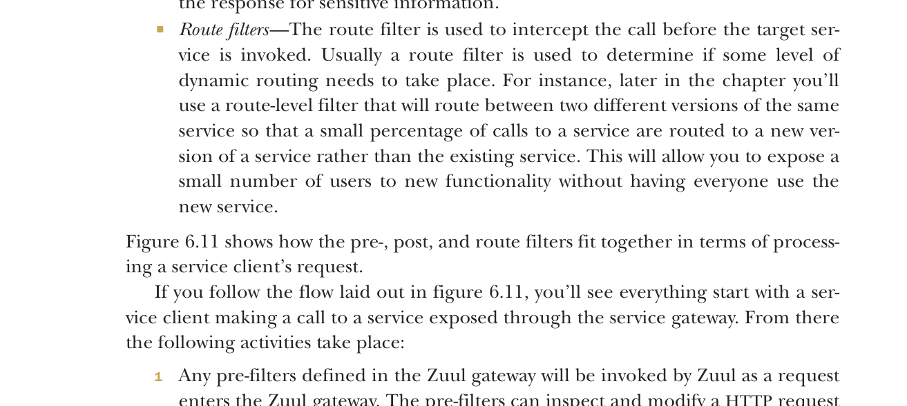

gateway. Thường thì logic tùy chỉnh này được dùng để áp dụng một bộ chính sách ứng dụng nhất quán như bảo mật, ghi log và theo dõi cho mọi dịch vụ.
Các chính sách ứng dụng này được coi là mối quan tâm xuyên suốt vì bạn muốn chúng được áp dụng cho mọi dịch vụ trong ứng dụng mà không phải sửa từng dịch vụ để triển khai chúng. Theo cách này, các filter Zuul có thể được dùng tương tự như servlet filter J2EE hoặc Spring Aspect có thể chặn một phạm vi rộng các hành vi và trang trí hoặc thay đổi hành vi của lời gọi mà lập trình viên ban đầu không hề biết đến sự thay đổi đó. Trong khi servlet filter hoặc Spring Aspect chỉ giới hạn trong một dịch vụ cụ thể, dùng Zuul và các filter Zuul cho phép bạn triển khai các mối quan tâm xuyên suốt trên mọi dịch vụ được định tuyến qua Zuul.
Zuul cho phép bạn xây dựng logic tùy chỉnh bằng filter trong gateway Zuul. Filter cho phép bạn triển khai một chuỗi logic nghiệp vụ mà mỗi yêu cầu dịch vụ đi qua khi được xử lý.
Zuul hỗ trợ ba loại filter:
- Pre-filter—Pre-filter được gọi trước khi yêu cầu thực tế tới đích đến diễn ra với Zuul. Pre-filter thường thực hiện nhiệm vụ đảm bảo dịch vụ có định dạng thông điệp nhất quán (ví dụ các HTTP header quan trọng đã có mặt) hoặc đóng vai trò người gác cổng để đảm bảo người dùng gọi dịch vụ đã được xác thực (họ là đúng người họ tuyên bố) và được ủy quyền (họ có thể làm những gì họ yêu cầu).
- Post filter—Post filter được gọi sau khi dịch vụ đích đã được gọi và phản hồi đang được gửi lại cho client. Thường thì post filter sẽ được triển khai để ghi log phản hồi từ dịch vụ đích, xử lý lỗi hoặc kiểm tra phản hồi để tìm thông tin nhạy cảm.
- Route filter—Route filter được dùng để chặn lời gọi trước khi dịch vụ đích được gọi. Thường thì route filter được dùng để xác định liệu có cần thực hiện một mức định tuyến động nào đó hay không. Ví dụ, sau này trong chương bạn sẽ dùng filter cấp route để định tuyến giữa hai phiên bản khác nhau của cùng một dịch vụ, sao cho một phần nhỏ các lời gọi tới dịch vụ được định tuyến tới phiên bản mới của dịch vụ thay vì dịch vụ hiện có. Điều này cho phép bạn cho một số ít người dùng trải nghiệm chức năng mới mà không bắt mọi người dùng dịch vụ mới.
Hình 6.11 cho thấy pre-, post và route filter phối hợp với nhau như thế nào trong quá trình xử lý yêu cầu của client dịch vụ.
Nếu bạn theo luồng được trình bày trong hình 6.11, bạn sẽ thấy mọi thứ bắt đầu với client dịch vụ thực hiện lời gọi tới dịch vụ được expose qua service gateway. Từ đó, các hoạt động sau diễn ra:
Mọi pre-filter được định nghĩa trong gateway Zuul sẽ được Zuul gọi khi một yêu cầu đi vào gateway Zuul. Pre-filter có thể kiểm tra và sửa đổi yêu cầu HTTP trước khi nó tới dịch vụ thực tế. Pre-filter không thể chuyển hướng người dùng tới một endpoint hoặc dịch vụ khác.
